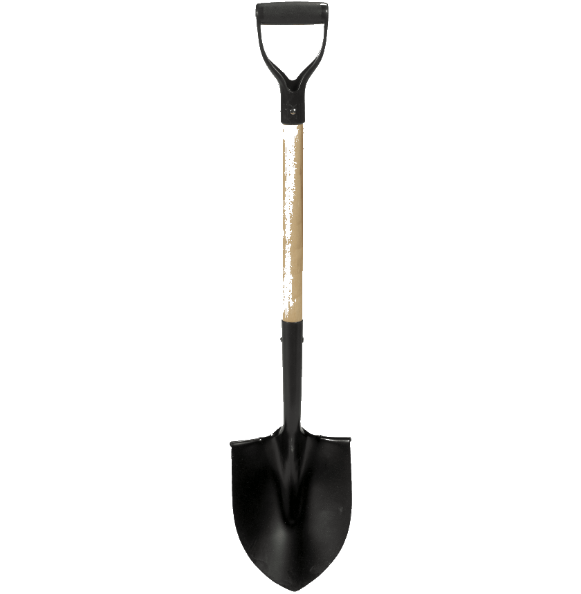
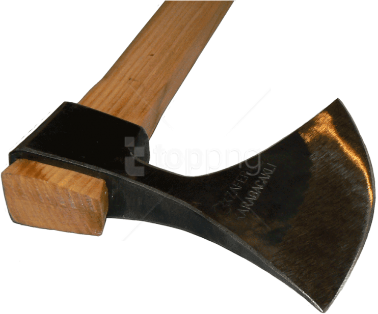
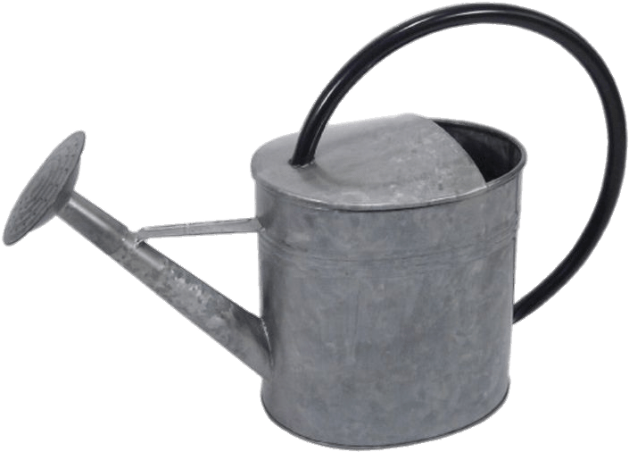
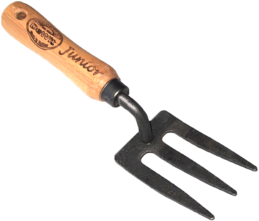
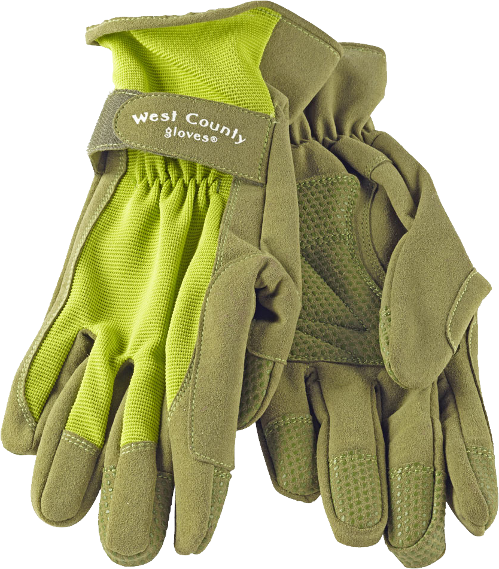
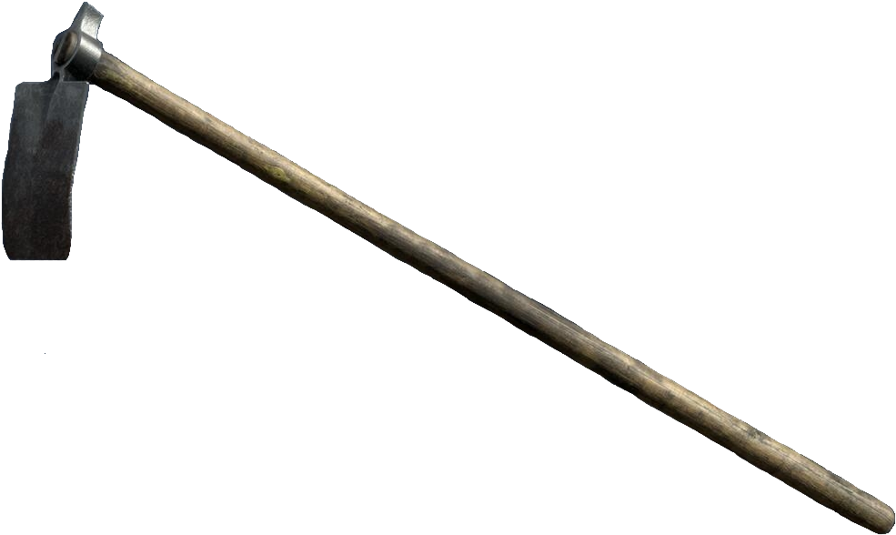
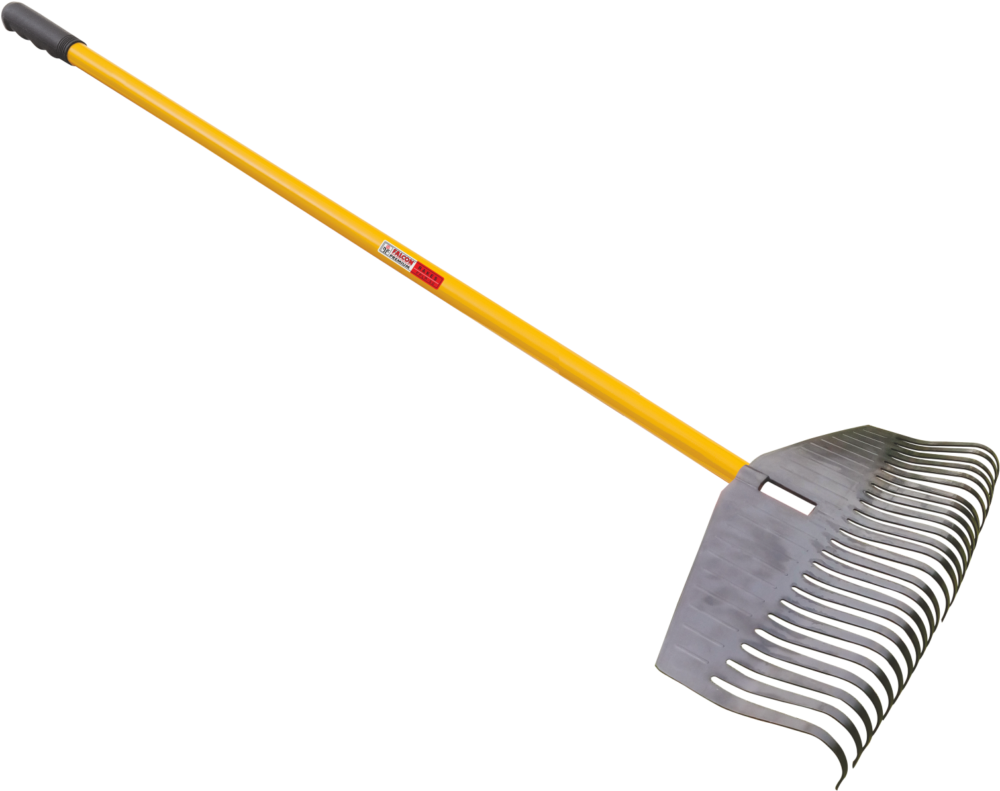
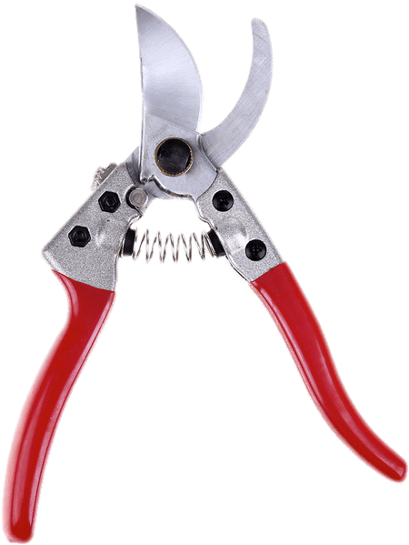
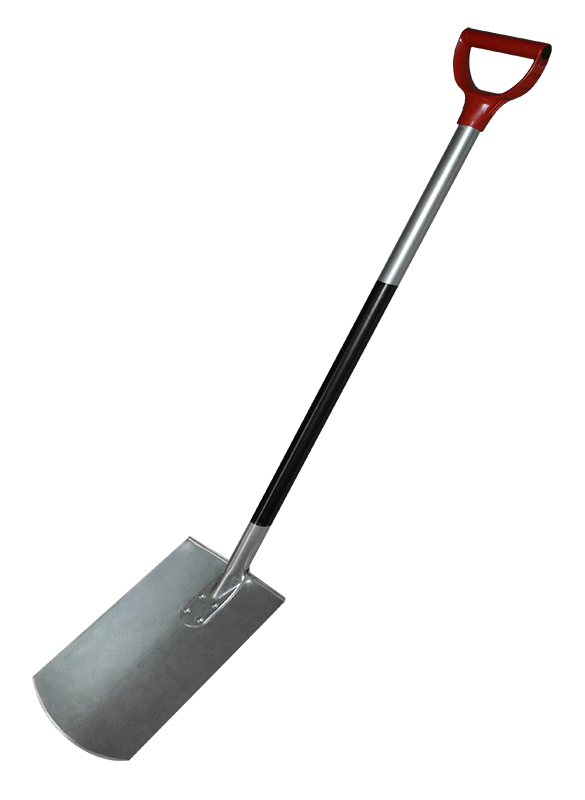

| Lapát | |
|---|---|
|  |
A lapát egy kéziszerszám a föld ásására, mozgatására és növények átültetésére. Fából vagy fémből készül, lapos, lapos végű formájú, általában markolattal vagy nyéllel együtt értékesítik. Ár: 5000 Ft |
| Balta | |
|---|---|
|  |
A balta egy kéziszerszám, amelyet fakitermelésre, faaprításra és általános használatra terveztek. A pengéje általában acélból vagy más kemény anyagból készül, és egy erős, fa vagy műanyag nyélre van erősítve. Ár: 8000 Ft |
| Locsolókanna | |
|---|---|
|  |
A locsolókanna egy hasznos kerti eszköz, amely lehetővé teszi a növények pontos öntözését. Általában műanyagból készül, és kézi pumpával rendelkezik, amely segítségével a víz könnyedén kijuttatható a kanna segítségével. Ár: 1500 Ft |
| Villa | |
|---|---|
|  |
A kerti villa egy hasznos eszköz a talaj megmunkálásához, mint például az ásás, a szellőzés és a komposztkeverés. Általában acélból készül, és hosszú nyelű, fogazott fejjel rendelkezik. Ár: 4000 Ft |
| Kerti kesztyű | |
|---|---|
|  |
A kerti kesztyű egy fontos eszköz a kertészkedés során, amely megvédi a kezét a sérülésektől és a piszkos munkától. Általában textilből vagy műanyagból készül, és különféle méretű és stílusú lehet. Ár: 2000 Ft |
| Kapa | |
|---|---|
|  |
A kapa egy erős és hatékony eszköz a talaj megmunkálására, mint például a gyomlálás és az ásás. Általában acélból készül, és egy hosszú, erős nyélre van erősítve. Ár: 4500 Ft |
| Gereblye | |
|---|---|
|  |
A gereblye egy kéziszerszám a kerti munkákhoz, mint például a fű és a levelek összegyűjtése vagy a talaj előkészítése vetéshez. Általában fa vagy műanyag nyélre van rögzítve, és fogai fémből vagy műanyagból készülnek, amelyek könnyen összeszedik az anyagokat. Ár: 6000 Ft |
| Kerti olló | |
|---|---|
|  |
A kerti olló egy kéziszerszám a kerti munkákhoz, amelyet általában növények metszésére használnak, például a cserjék vagy virágok nyírására. Legtöbbször acél pengével és kényelmes fogóval készül, hogy könnyen és precízen lehessen vele dolgozni. Ár: 3500 Ft |
| Ásó | |
|---|---|
|  |
Az ásó egy kéziszerszám a talaj ásására, ásásra és átültetésre. Általában kemény acélból készült, és markolattal vagy nyéllel van ellátva, hogy könnyen kezelhető legyen. A kerti munkák elengedhetetlen eszköze, amelynek segítségével kertjét megművelheti és javíthatja. Ár: 7000 Ft |